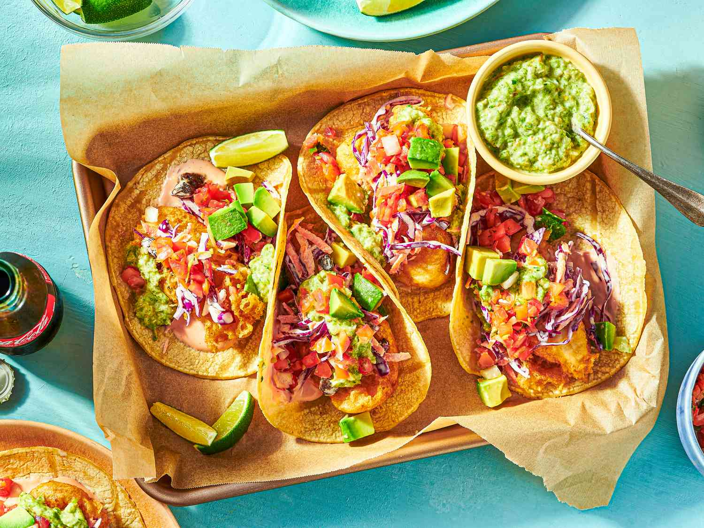

Fish Tacos

Description
These crispy fish tacos with shredded cabbage and a spicy homemade white sauce are just delicious!
Serve with homemade pico de gallo and lime wedges to squeeze on top.
Ingredients
- 1 quart oil for frying
- 1 pound cod fillets, cut into 2 to 3 ounce portions
- 2 tablespoons all-purpose flour, or more as needed
- 1 (12 ounce) package corn tortillas
- ½ medium head cabbage, finely shredded
Steps
- Heat oil in a deep-fryer to 375 degrees F (190 degrees C).
- Dust fish pieces lightly with flour. Set aside.
- Dip floured fish pieces into beer batter. Set aside.
- Fry in hot oil until crisp and golden brown. Drain on paper towels. Lightly fry tortillas in hot oil
until just crisped, but not too crisp. Drain on paper towels.
- Place fried fish in tortillas; top with shredded cabbage and white sauce.